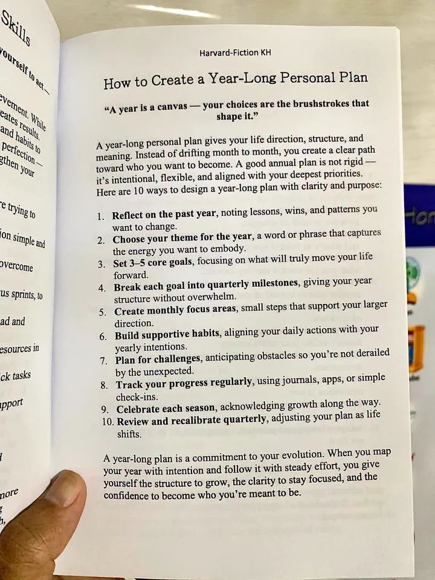

Kabut malam turun perlahan menyelimuti kawasan Dago Pakar, Bandung. Dari balik dinding kaca patri kantor Quantum Edge Capital, kerlip lampu kota tampak seperti lautan bintang yang terbalik. Udara dingin di luar berbanding terbalik dengan suasana hangat di dalam ruang rapat utama. Mesin espreso baru saja menyelesaikan putaran ketiganya, menyebarkan aroma kopi arabika yang pekat, bercampur dengan dengung pelan dari layar-layar terminal data finansial yang menampilkan grafik pergerakan pasar global.
Di ruangan itu, empat orang yang mengendalikan ratusan miliar dana kelolaan sedang duduk melingkar. Mereka bukan sekadar sekumpulan pialang, melainkan arsitek portofolio. Baskara, sang manajer investasi utama, memutar-mutar pena mahalnya sambil menatap tajam ke arah papan tulis digital. Di sebelahnya duduk Diana, kepala manajemen risiko yang memiliki ketelitian setajam pisau bedah. Di sudut meja, Reza, sang analis kuantitatif, masih sibuk mengetik barisan kode algoritma di laptopnya. Sementara itu, Julian, ahli strategi makroekonomi, bersandar santai di kursinya sambil sesekali memejamkan mata, meresapi alunan pelan musik jazz yang mengalun dari pelantang suara nirkabel di sudut ruangan.
Malam itu, mereka tidak sedang membahas volatilitas indeks saham atau strategi lindung nilai. Malam ini adalah jadwal tinjauan strategis tahunan, sebuah momen kontemplatif yang diwajibkan oleh Baskara setiap kali kuartal pertama berakhir. Namun, Diana memutuskan untuk membawa diskusi malam ini ke arah yang sedikit berbeda. Ia tidak memproyeksikan grafik kuadran risiko, melainkan sebuah tangkapan gambar dari sebuah buku.

"Coba kalian perhatikan ini," suara Diana memecah keheningan, mengalihkan perhatian ketiga rekannya dari layar masing-masing. Gambar itu menampilkan sepuluh langkah tentang cara membuat rencana pribadi berdurasi satu tahun.
"Sebuah rencana personal?" Baskara menaikkan sebelah alisnya, merapikan letak kacamatanya. "Diana, kita berada di bisnis yang mengkalkulasi probabilitas ekonomi makro, bukan sesi terapi motivasi akhir pekan."
Diana tersenyum tipis, sudah menduga reaksi atasannya itu. "Jangan remehkan kesederhanaannya, Bas. Kalau kamu perhatikan struktur sepuluh poin ini, ini adalah manifestasi sempurna dari arsitektur manajemen portofolio yang sering kita abaikan dalam kehidupan pribadi kita, dan ironisnya, dalam ritme kerja tim kita sendiri. Baca kalimat pembukanya: 'Setahun adalah sebuah kanvas, pilihan-pilihanmu adalah goresan kuas yang membentuknya.' Bukankah itu sama dengan bagaimana kita mengalokasikan aset dari bulan ke bulan?"
Reza menghentikan ketikannya. Matanya yang lelah memindai teks di layar besar itu. "Poin keempat menarik," gumam Reza dengan nada mekanis khasnya. "Memecah tujuan menjadi tonggak pencapaian kuartalan. Itu pada dasarnya adalah fungsi turunan. Kita membagi fungsi besar menjadi delta-delta kecil agar anomali atau deviasi bisa segera dideteksi. Poin kedelapan, melacak kemajuan secara berkala. Itu sistem peringatan dini kita."
"Tepat," sahut Diana cepat. Ia bangkit dari kursinya, berjalan mendekati layar. Jari telunjuknya menunjuk pada poin ketujuh. "Tapi sebagai manajer risiko, ini favorit saya. 'Plan for challenges, anticipating obstacles so you're not derailed by the unexpected.' Merencanakan tantangan. Terlalu banyak orang, bahkan manajer dana lindung nilai di luaran sana, membuat rencana tahunan dengan asumsi kondisi pasar ideal. Mereka lupa memasukkan variabel angsa hitam, atau sekadar koreksi pasar biasa. Kerangka ini memaksa kita memiliki bantalan."
Baskara mulai tampak tertarik. Pandangan skeptisnya perlahan memudar, berganti dengan kalkulasi analitis. Ia membaca poin demi poin. Mulai dari merefleksikan tahun lalu (analisis data historis), memilih tema (tesis investasi), hingga menetapkan area fokus bulanan (taktik alokasi taktis). Semuanya beresonansi dengan logika finansial yang mengalir dalam darahnya. Kota Bandung yang dingin di luar seolah menjadi saksi bisu bagaimana empat pemikir cerdas ini mendekonstruksi teks sederhana menjadi filosofi kerja yang mendalam.
Namun, di tengah diskusi yang semakin teknis dan kaku antara Baskara yang fokus pada struktur, Reza yang fokus pada metrik, dan Diana yang fokus pada mitigasi risiko, Julian akhirnya membuka suara. Sedari tadi ia hanya mendengarkan sambil menyesap teh hangatnya, membiarkan alunan saksofon John Coltrane mengisi latar belakang perdebatan mereka.
"Kalian semua melihat ini dari kacamata rekayasa perangkat lunak dan neraca keuangan," kata Julian dengan nada tenang, nyaris seperti orang yang sedang bernyanyi pelan. Ia berdiri, meregangkan tubuhnya, lalu berjalan menuju jendela yang menghadap ke arah jembatan Pasupati yang bercahaya di kejauhan.
"Lalu dari kacamata apa kita harus melihatnya, sang filsuf?" sindir Baskara dengan nada bercanda.
Julian berbalik, menatap layar yang masih menampilkan gambar buku tersebut. Ia tersenyum lebar. "Dari kacamata Modal Jazz."
Ketiga rekannya saling berpandangan, bingung. Julian memang dikenal sebagai otak kreatif di tim mereka. Latar belakangnya yang memadukan ilmu sejarah ekonomi dan kecintaannya yang fanatik terhadap musik jazz sering kali menghasilkan sudut pandang pasar yang tidak ortodoks, namun terbukti sangat akurat dalam memprediksi pergeseran sentimen pasar makro.
"Coba jelaskan korelasi antara sepuluh langkah perencanaan pribadi ini dengan musikmu itu, Jul," tantang Diana sambil melipat tangan di dada, matanya memancarkan rasa ingin tahu yang besar.
Julian mengangguk. Ia berjalan perlahan ke tengah ruangan, mengambil posisi seolah sedang mengajar di ruang kelas universitas ternama. "Sebelum akhir tahun 1950-an, musik jazz didominasi oleh aliran Bebop," Julian memulai penjelasannya. "Bebop itu seperti pasar dengan frekuensi perdagangan tinggi yang sangat fluktuatif. Sangat cepat, pergantian akord terjadi di setiap ketukan. Musisi harus meliuk-liuk di antara harmoni yang rumit secara terus-menerus. Sangat melelahkan, sangat kaku pada progresi akord, persis seperti orang yang merencanakan hidup atau portofolio bulan ke bulan, tanpa arah besar yang jelas, hanya bereaksi pada apa yang ada di depannya. Seperti yang teks itu bilang: 'drifting month to month'."
Reza mengangguk pelan, mulai menangkap analogi matematis di balik struktur musik yang dijelaskan Julian.
"Lalu datanglah Miles Davis dengan album legendarisnya, Kind of Blue. Dia memperkenalkan Modal Jazz kepada dunia," lanjut Julian, matanya berbinar penuh semangat. "Dalam Modal Jazz, kamu tidak diberi puluhan akord yang berganti setiap detik. Kamu hanya diberi satu 'Mode', satu tangga nada dasar, atau tema utama. Kamu bisa bermain di satu akord itu selama belasan birama."
Julian menunjuk layar, tepat pada poin kedua. "Lihat poin nomor dua: 'Choose your theme for the year'. Itulah Mode-nya. Rencana tahunan yang baik bukanlah kerangkeng besi yang berisi jadwal harian yang ketat. Itu adalah sebuah tema besar. Sebuah fondasi."
Baskara menyela, "Tapi kalau tidak ada aturan akord yang ketat, bukankah itu akan menjadi kekacauan? Bagaimana dengan disiplin eksekusi?"
"A good annual plan is not rigid — it's intentional, flexible, and aligned with your deepest priorities."
"Itu bagian terbaiknya, Bas," jawab Julian segera. "Teks itu secara eksplisit mengatakan: 'A good annual plan is not rigid — it's intentional, flexible, and aligned with your deepest priorities'. Modal Jazz memberikan ruang kebebasan berekspresi yang luar biasa besar, tetapi bukan berarti tanpa niat. Justru karena strukturnya sedikit (poin 3: Set 3-5 core goals), sang musisi harus sangat intensional dengan setiap nada yang ia tiup. Sama seperti teks itu: 'your choices are the brushstrokes'. Di Modal Jazz, setiap nada berarti. Kamu tidak bisa bersembunyi di balik pergantian akord yang cepat."
Diana menatap Julian dengan kekaguman yang tak disembunyikan. "Jadi maksudmu, poin keempat sampai keenam—tonggak kuartalan, fokus bulanan, dan kebiasaan harian—itu seperti seksi ritme dalam band jazz?"
"Seratus buat Kepala Risiko kita yang brilian," puji Julian. "Drummer dan pemain bass berjalan stabil menjaga tempo. Itulah kebiasaan harian dan fokus bulananmu. Mereka membangun struktur tanpa membuatmu merasa terbebani. Mereka memberikan ruang aman bagimu (sebagai solois atau eksekutor utama) untuk berimprovisasi saat pasar sedang kacau balau, yang mana berhubungan dengan poin ketujuh: mengantisipasi rintangan."
Reza, sang jenius angka, akhirnya ikut bersuara dengan senyum tipis di wajahnya. "Dan poin kesepuluh, 'Review and recalibrate quarterly'. Itu adalah momen ketika sang solois mengakhiri improvisasinya, mendengarkan apa yang dimainkan pianis, dan band kembali ke tema utama bersama-sama. Sinkronisasi ulang."
"Eksak," Julian menjentikkan jarinya. "Recalibration. Kehidupan bergeser, pasar berubah, sentimen makro berputar arah. Kamu tidak bisa terus memainkan nada yang sama jika band sudah bergeser dinamikanya. Kamu harus menyesuaikan rencana, tanpa harus kehilangan tema utama tahun tersebut."
Ruangan itu kembali hening, namun kali ini bukan keheningan yang tegang, melainkan keheningan kontemplatif yang dalam. Suara hujan rintik-rintik mulai menghantam kaca jendela, menambah nuansa syahdu malam di kota kembang tersebut. Penjelasan Julian baru saja mengubah sebuah teks perencanaan sederhana menjadi sebuah simfoni strategi kehidupan tingkat tinggi.
Baskara menyandarkan punggungnya, menatap lurus ke arah Julian. Pandangan kerasnya telah luluh total. "Saya harus mengakui, itu adalah interpretasi yang sangat indah, Julian. Saya selalu terjebak pada dikotomi antara rencana yang sangat kaku agar tidak melenceng, atau sekadar berselancar di atas gelombang tanpa rencana yang jelas. Konsep 'Improvisasi Intensional' di atas sebuah kerangka Mode ini... ini bisa kita aplikasikan."
"Bukan hanya untuk portofolio dana lindung nilai kita," tambah Diana lembut. "Tapi untuk diri kita sendiri. Coba kita renungkan poin pertama. Kapan terakhir kali kita benar-benar merayakan kemenangan kuartalan kita tanpa langsung dihantui kecemasan tentang target kuartal berikutnya? Poin kesembilan mengatakan 'Celebrate each season'. Kita melewatkan musim demi musim hanya menatap layar ini."
Reza menutup layar laptopnya dengan bunyi klik pelan. "Saya akan merancang ulang metrik pelacakan kita. Alih-alih hanya berfokus pada hasil akhir berupa nilai aset bersih absolut, saya akan memasukkan variabel yang melacak 'kesehatan proses'. Seberapa konsisten kita menjalankan langkah-langkah kecil (poin 5 dan 6), ketimbang hanya melihat lompatan besar. Rencana jangka panjang butuh nafas panjang, bukan sekadar sprint terus-menerus."
Diskusi malam itu berlanjut hingga lewat tengah malam. Namun suasananya terasa jauh lebih ringan. Udara dingin Bandung yang menerobos celah ventilasi terasa menyegarkan. Mereka berempat tidak lagi membahas angka-angka kering, melainkan mulai mendiskusikan apa "Tema" atau "Mode" mereka masing-masing untuk sisa tahun ini.
Baskara memilih tema 'Ketahanan', fokus pada membangun fondasi portofolio yang tahan terhadap guncangan inflasi global. Diana memilih tema 'Keseimbangan', menyadari bahwa ia perlu membagi waktunya lebih adil antara karier analitisnya dan kehidupan sosialnya di luar kantor. Reza, secara mengejutkan, memilih tema 'Eksplorasi', bertekad untuk keluar dari zona nyaman algoritmanya dan mulai mempelajari sisi perilaku psikologis dari pasar saham.
Dan Julian? Ia memilih tema 'Kejernihan'. Seperti nada tiupan terompet Miles Davis yang bening memecah ruang, ia ingin setiap tesis investasi yang ia buat tahun ini memiliki argumentasi yang jernih, bebas dari kebisingan pasar yang tidak relevan.
Ketika akhirnya mereka bersiap untuk pulang, meninggalkan ruang rapat yang penuh dengan cangkir kopi kosong dan coretan-coretan baru di papan tulis, Baskara menepuk pundak Julian. "Terima kasih atas kuliah jazz-nya malam ini. Mengubah cara pandang saya secara radikal."
Julian tersenyum, merapikan mantelnya bersiap menembus dinginnya malam kota Bandung. "Rencana tahunan memang sebuah komitmen pada evolusi diri, Bas. Saat kamu memetakan tahunmu dengan niat, dan mengikutinya dengan usaha yang stabil, kamu memberikan dirimu struktur untuk tumbuh. Kita hanya perlu ingat untuk sesekali berimprovisasi dengan nada yang kita temukan di tengah jalan."
Mereka berempat melangkah keluar menuju lobi, meninggalkan keheningan kantor. Di luar, hujan telah reda, meninggalkan aroma petrikor khas tanah Parahyangan. Sebuah harmoni sempurna antara struktur kota yang mapan dan keliaran alam yang bebas, persis seperti rencana tahunan yang ideal, persis seperti sebuah musik Modal Jazz yang abadi.